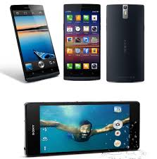

SONY XPERIA Z2

Sony sigue explotando al máximo el exitoso diseño del Xperia Z y en el nuevo buque insignia Xperia Z2 pocos cambios os vais a encontrar. Este nuevo terminal llamado al éxito tiene, en casi el mismo espacio que el Xperia Z1, una pantalla de 5,2 pulgadas Full HD de gran calidad, pero que sufre un gran defecto: se ve bastante mal en la calle con luz de día. Sigue contando con resistencia a polvo y agua.
El resto del hardware acompaña, y mucho, al teléfono para hacerlo realmente fluido: 3GB de RAM, procesadores Snapdragon 801, 16GB de almacenamiento y una cámara de 20,7 pulgadas capaz de grabar vídeos en 4K. Si bien es de dudosa utilidad grabar en 4K (no están tan extendidas estas pantallas para ver los vídeos y apreciar las diferencias), cuenta con la mejor cámara de los modelos aquí presentados aunque el software de la misma de Sony sigue necesitando un buen repaso. Además, el terminal es el más grande de la actual gama alta y habría estado bien que Sony prescindiera de tanto borde y hubiera reducido su tamaño general.
Aun así, ese tamaño extra hace que albergue una batería de 3.200 mAh, que hará que nos dure 10 horas de uso intenso navegando, usando el WhatsApp y escuchando música, y que no haya absolutamente ningún problema para que lleguemos al final del día con él. Desgraciadamente no aporta nada al usuario final que no aporten el Xperia Z1 o Z1 Compact, por lo que se puede calificar como más de lo mismo.PRINCIPAL